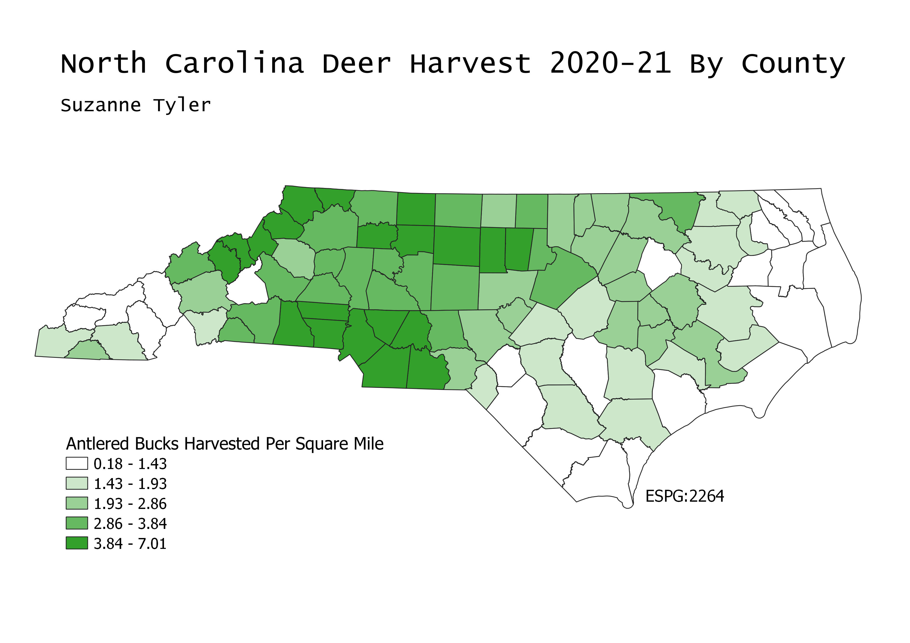

North Carolina Deer Harvest By County: Number of Antlered Bucks Harvested per Square Mile
GEOG 370-006 // Homework 7 // Suzanne Tyler // March 3, 2022
Map
This map was made using data on deer harvest during the 2020-21 hunting season from the NC Wildlife Resources Commission. I chose to represent this data because I was interested in seeing how the popularity of deer hunting varies accross the state. In my county (Stokes), the popularity is high as I expected. County vector data was taken from the census webstie. I used equal count data categorization because after trying out a few different types I felt that it best represented the data.

Sources
NC Deer Harvest Data
NC County Vector Data
My Files
Cleaned Data (csv)
NC Counties (geoJSON)